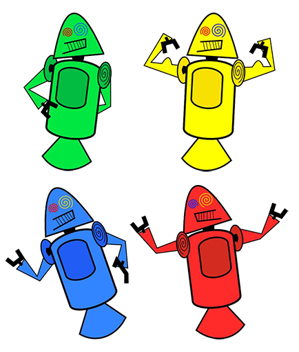

História do mascote do android
Provavelmente você sabe que o sistema operacional Android, mantido pelo Google é um dos mais utilizados para dispositvos móveis em todo o mundo. Mas talvez você não saibas que o seu simpático mascote tem um nome e uma história muito curiosa? Pois acompanha esse artigo para aprender sobre esse robozinho
A Primeira Versão
A primeria tentativa de criar o mascote surgiu em 2207 e veio de um desenvolvedor chamado Dan morril() . Ele conta que abriu o linkscape (software livre para vetorização de imagens) e criou sua própria verão de robô. O objectivo era apenas personalizar o sistema apenas para a sua equipe, não existia nenhuma solicitação da empresa para criação de um mascote

Essa primeira versão bizarra até foi batizada em homenagem ao seu criador, seriam os Dandroids
Surge um novo mascote
A Ideia de ter uma mascote foi amadurecendo e a missão foi passada para um profissional da áresa. A ilustradora Russa Irina bloc(). também funcionária do Google, ficou com a missão de representar o pequeno de uma maneira mais agradável

A ideia principal da Irina era representar tudo graficamente com poucos traços e de forma mais chamativa. O desenho também deveria gerar identificação rápida com quem o olha. Surgiu então o (Bungdroid) o novo mascote do android.
A principal inspiração para os traços do novo Bungdroid veio daqueles bonequinhos que ilustram portas de banheiros para indicar o gênero de cada porta. Conta a lenda que a artista estva criando em sua mesa no escritório do Google e olhou para o lado dos banehiros e a identificação foi imediata simples, limpo, objetivo